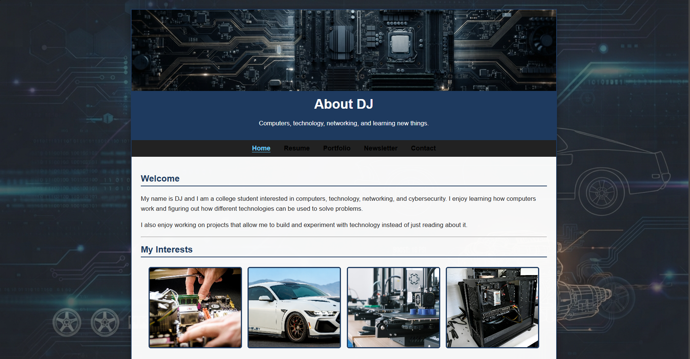
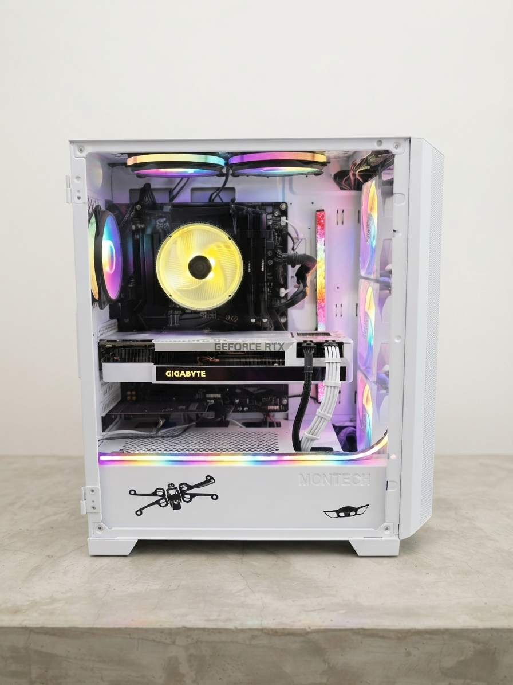
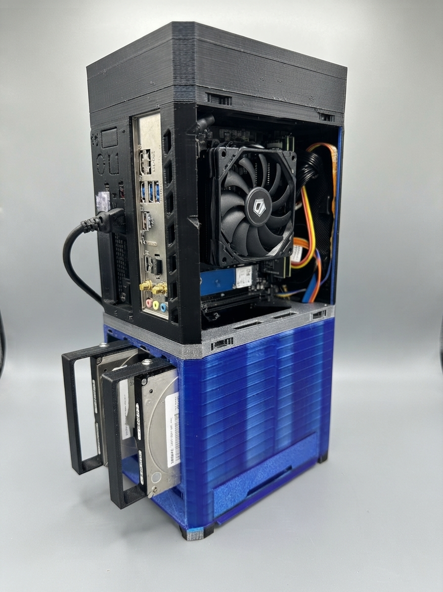
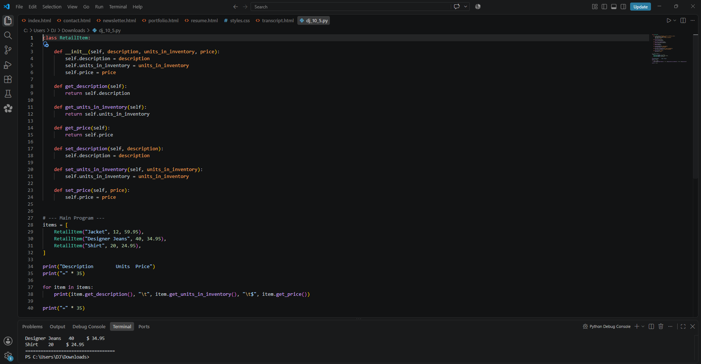
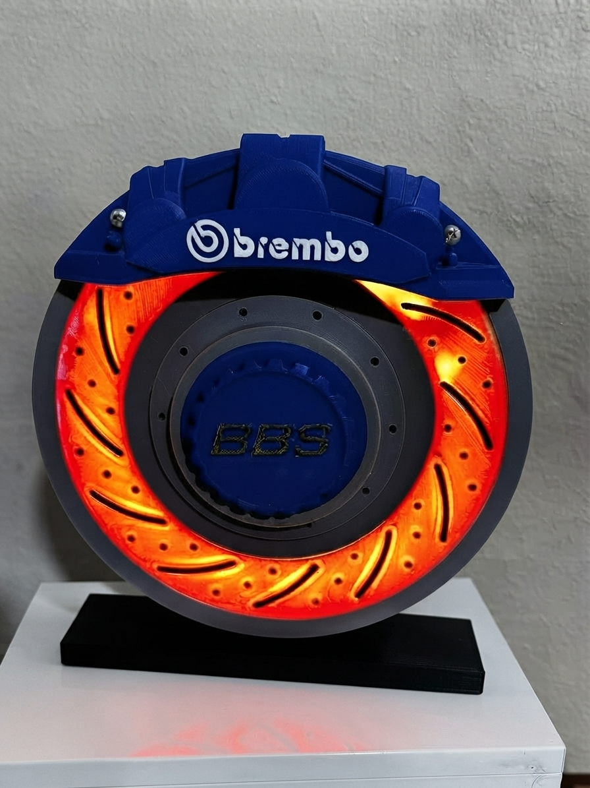
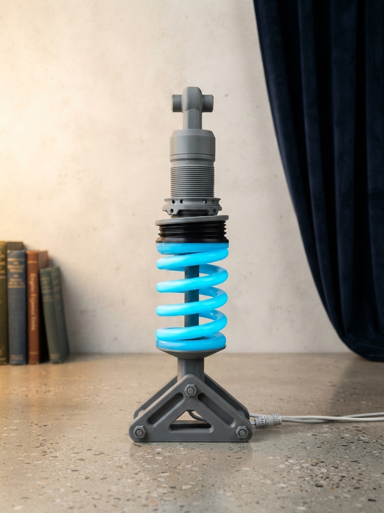

This portfolio showcases projects and hands-on experience
involving web development, computer hardware, networking,
Linux, programming, and 3D printing.

Personal Website
Personal Website
A multi-page personal website created using HTML5 and CSS.
The website demonstrates responsive web design, navigation,
page organization, and GitHub Pages hosting.
Skills:
HTML5, CSS, Responsive Web Design, GitHub Pages
A custom-built desktop computer assembled with a focus on
performance and hardware compatibility.
Hardware:
Intel Core i7-12700K, ASUS ROG Strix B760-A Gaming WiFi,
Corsair Vengeance LPX DDR4-2666, and Gigabyte Vision
RTX 3080 OC.

PC Audio Troubleshooting & Hardware Repair
PC Audio Troubleshooting & Hardware Repair
Troubleshot a custom-built PC after its onboard audio
stopped functioning. Driver updates, reinstallations,
output changes, and physical connection checks did not
resolve the problem.
The onboard audio was determined to be the likely failed
component. An ASUS XONAR SE 5.1 Channel sound card was
installed, restoring audio functionality.

Home Server & Media Network
Home Server & Media Network
A home server built using a Ryzen 3 3200G, 8 GB of DDR4
memory, and approximately 4 TB of storage.
The server runs CasaOS and Linux-based services and is
used for family photos, files, music, and movie streaming
through Jellyfin.
Linux Virtual Machine & Networking
Linux Virtual Machine & Networking
Hands-on experience creating and working with Linux virtual
machines, including Ubuntu and other Linux distributions,
while studying networking concepts.
This project provided practical experience with Linux
administration, virtual machines, and networking
fundamentals.

Python Programming
Python Programming
A programming project demonstrating experience with Python
programming concepts learned through coursework.
Skills:
Python programming, problem solving, and programming
fundamentals.

3D-Printed Caliper
3D-Printed Caliper
A 3D-printed caliper project demonstrating CAD design,
3D printing, and the process of turning a digital design
into a physical object.

3D-Printed Car Coilover Lamp
3D-Printed Car Coilover Lamp
A custom lamp based on an automotive coilover design.
The project combines automotive-inspired design,
3D printing, and lighting components.